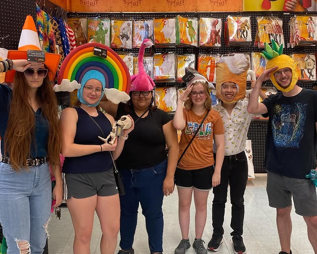
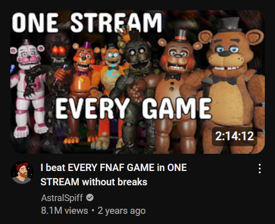
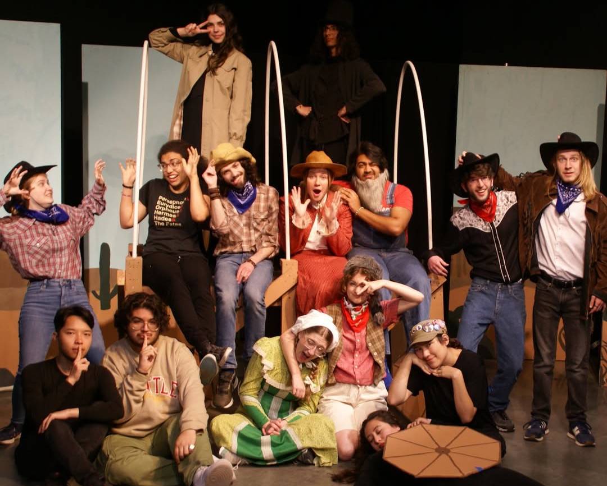
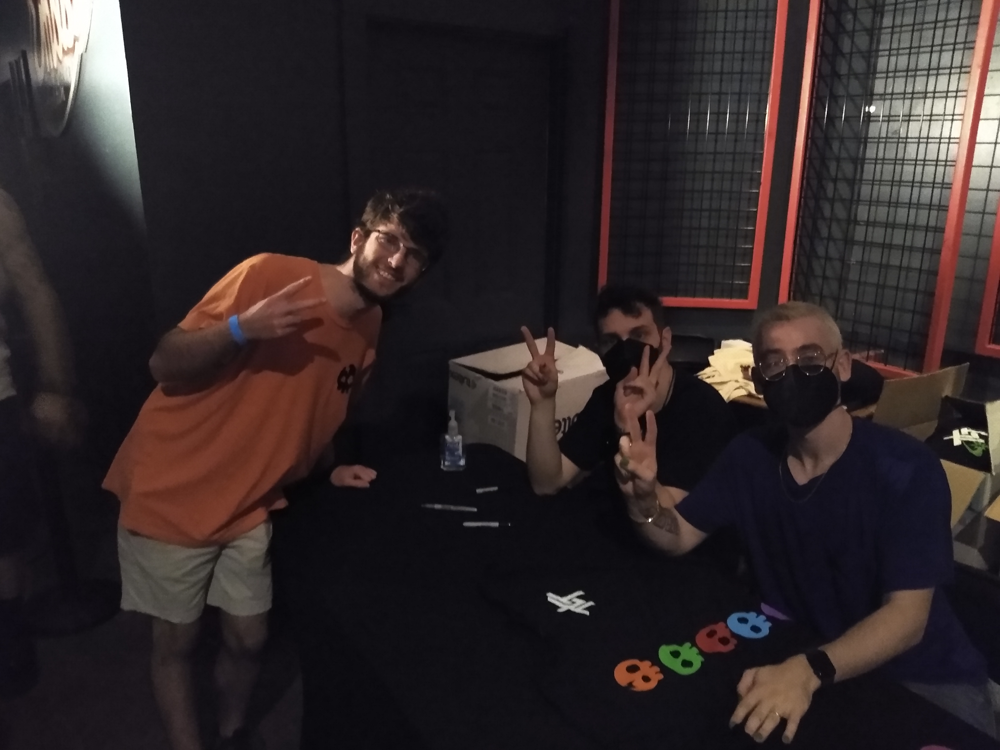
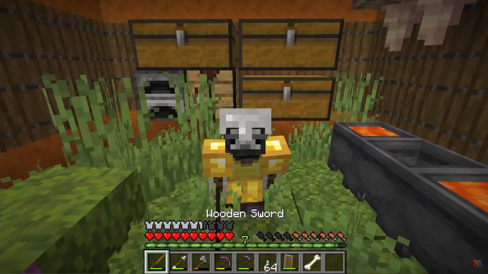

Topic
My Hobbies!
My Hobbies!

Hanging out with my friends is a great way I spend my time
whether it be on Discord playing Lethal Company or Minecraft or hanging out in person
going to the local Spirit Halloween or celebrating a Birthday! You can always count on
friends to lift you up after a stressful day.
Most of my friends right now are in my theater org, but I still hold some from back in high school and hope to find more as I go through life. Each have their own stories, experiences, and skills that I deeply enjoy hearing about and supporting them when they need it.
I may not at all times have a large amount of friends, but that's the way I like it with a chosen few close to me as I go through life! I would not be where I am without them and their support!

YouTube has always been a constant source in my life
whether that be for inspiration, entertainment, learning about my favorite games,
or even vlogging the projects I work on!
I've had a few favorite YouTubers over the years including Jacksepticeye, Mumbo Jumbo, and Game Theory, but my current favorite is AstralSpiff!
He plays games in the horror category but often puts a spin on it including Speedrunning which puts a different perspective on the relationship between the Game, Player, and Game Developer. They're also very long, calming videos that I can watch after a long day! ☕

Oh boy, theater... What a wild ride it's been.
I've participated in theater on and off since junior high and the people and the laughs
are what I always come back for! Everyone there always arrives on their A-game and bring
so much energy and wackiness to every rehearsal.
For the University Theatre Guild, I've participated in 5 Children's Shows and my first musical: Trail to Oregon! One the best plays I've seen and been apart of! 🐂
Will I continue theater once I've graduated? Who knows? It always somehow creeps back into my life and I meet some amazing people!

Everyday, anytime I work, I am guaranteed to be listening to music!
It gets me in the groove and helps me focus on the task I'm doing. Even right now I'm listening to music,
specifically The Struts!
My music tastes have changed over the years from popular pop and alternative rock, to video game soundtracks and fan songs, to some emotional songs about growing up and life as we know it.
Some of my favorite artists over the years have been Imagine Dragons, Or3o, Derivakat, Gooseworx, and The Living Tombstone. The Living Tombstone being my favorite as I tried to achieve the #1 spot on Spotify Wrapped the same year I saw them perform live in Austin!

My favorite game I would have to say is Minecraft.
I've played it since I was a child on my tablet and still keep up with it to this day
even though I'm not able to play it as much.
Every Wednesday, I keep on eye out for the latest Minecraft snapshot update to see what's new for features, optimizations, and developer features. Here's to hoping that they eventually allow full creative freedom of their game through Datapacks! I would love to take on a creative project modifying the game to what I desire! I've already collected a list of ideas... 👀